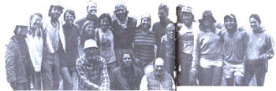

On a little more than a quarter-acre of land near Crane Hill, Alabama, Charles Wilber tends what most folks would consider a truly remarkable garden. His plot contains such wonders as 13-1/2-pound cucumbers, 42-pound squash, three-inch-long peanuts . . . and 27-foot-tall tomato plants. According to Mr. Wilber, the tremendous growth of his vegetables is due primarily to that very common and often-cursed vine, kudzu.
Raised on an Arkansas farm, Charles has been involved with plants most of his life. He spent his teen years experimenting with various growing methods and won numerous contests as a result of his efforts at raising soybeans, peanuts, and pop-corn. But it was only about four years ago that Mr. Wilber worked out his formula for making kudzu compost. The fertilizer, which Charles is now considering making on a commercial scale, creates a light, fluffy soil and encourages fruits and vegetables to grow to record proportions.
Kudzu has long been used for erosion control and livestock fodder, and its ability to increase soil fertility has been recognized by the Japanese for centuries. But in the southern U.S., the vine's rampant growth has caused it to become an object of scorn, and many think it worthy only of eradication. Charles Wilber, however, is one southerner who'd rather sing kudzu's praises. In his eyes, the "mile-a-minute" vine is nothing short of a miracle worker.-Kip Smith.
EDITOR'S NOTE: After Charles Wilber's magical compost was mentioned in issue 85's Bits and Pieces column, we received a few letters from readers who were skeptical that kudzu could have such an effect on vegetable growth. Perhaps the accompanying photo of Mr. Wilber's tomato plants will allay some doubts.
On April 1, 1984, near the rocky shores of Point Reyes National Seashore in California, 35 people embarked on a 3,800-mile, seven-month journey to Washington, D.C. Of all ages and backgrounds, the participants in this Walk for the Earth had joined in an effort to focus attention on Native American rights, the environment, and world peace. In the process, the walkers received an unexpected benefit: They learned how to simplify their own lives.
Members of the group quickly discovered that their basic needs could be met with little expense. Lodging fees, for example, were generally nonexistent. In the West, the group stayed on public property or-after receiving permission from tribal officials-on Indian land. In the Midwest and the East, the trekkers often approached town mayors or local police for ideas on where to spend their nights. Their inquiries were received warmly, and they were able to stay in city parks, farmers' fields, churches, and even an American Legion Hall.
Throughout the walk, the group's meals were modest but nourishing, frequently consisting of rice, lentils, beans, or oatmeal, with an occasional wild delicacy.
As the walk reached its conclusion, the participants felt that their trip had indeed been worthwhile. They had met many kind people, spent time with the first Americans, and publicized several important issues. In addition, they had resolved to carry the walk's goals into their day-today lives . . . and to continue living simply.-Doug Alderson.
EDITOR'S NOTE: The author of this profile is the founder of the Native Culture and Ecology Research Foundation and was a major organizer of-and a participant in-last summer's walk. He is currently in Europe, continuing the Walk for the Earth.
From the point of view of amateur astronomer LARRY KOEHN, the return of Halley's comet is an event that deserves everyone's attention. To disseminate information about the comet, Koehn created the Halley's Comet Newsletter. The monthly publication reportedly has something of interest for all stargazers, be they inexperienced or expert. (An 18-month subscription can be ordered for $15 by writing Halley's Comet Newsletter, P.O. Box 3458, Clarksville, TN 37043.)
In 1984, REYNOLDS METALS COMPANY recycled a record 336 million pounds of aluminum-the equivalent of about 8.7 billion beverage cans. The recycled material provided approximately 25% of the metal needed by the company. Richard N. Bolling, vice president of the Recycling and Reclamation Division, notes that recycling aluminum greatly conserves energy and resources and that it's profitable for everyone involved: "Consumers earn money . . . and industry benefits from the added source of supply."
Animal-rights activist RON SADOWSKY will be running through dozens of U.S. cities this summer on his Animal Rights America Run. Sadowsky, a member of the nonprofit Animal Rights Coalition, says that his goal is to "promote understanding of, and compassion for, all vulnerable beings-both human and animal."
Students at NEW YORK UNIVERSITY can now choose to minor in Peace and Global Policy Studies. The new program revolves around a course entitled "Nuclear War and Its Prevention."Student demand is expected to be high, and plans are already under way to convert the program to full major status within the next three years.
The RALSTON PURINA COMPANY has donated 6,000 pounds of feed to a waterfowl rehabilitation project in the Seattle, Washington, area. About 250 birds, injured in an oil spill on Puget Sound, have been involved in the project, which is expected to conclude this summer. The feed for the ailing birds was specially formulated by Ralston Purina and was administered by a host of devoted volunteers.-DM.
|
Photo Supplied By The Author |
 |
|